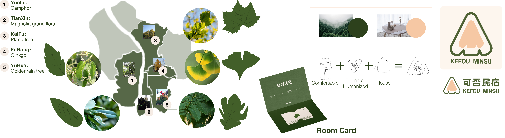
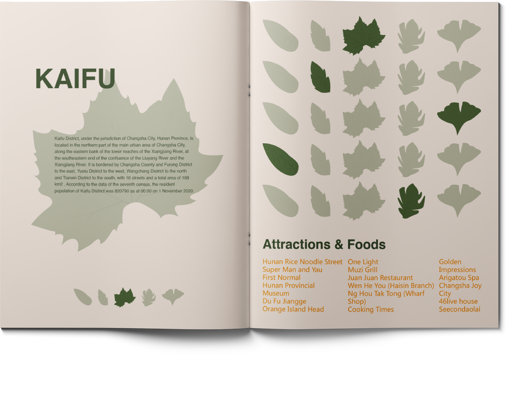
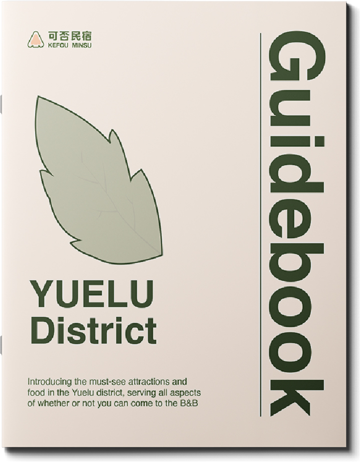
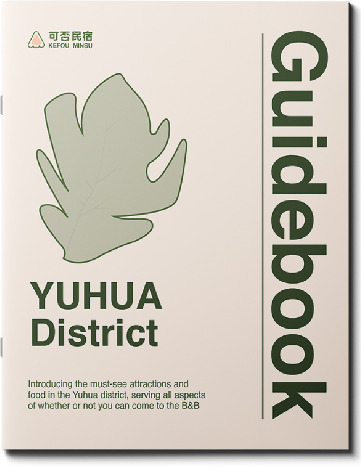
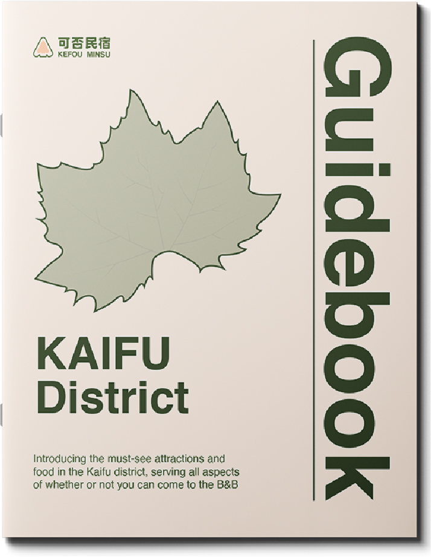
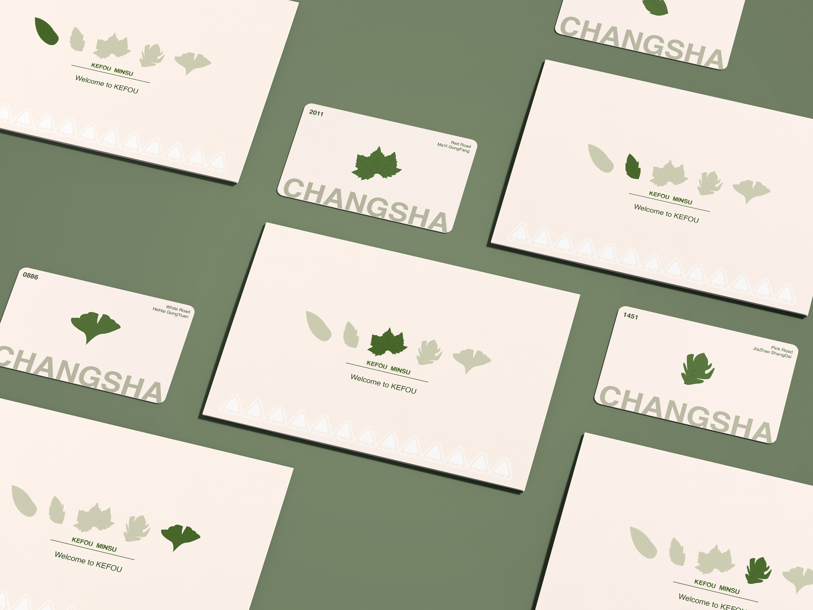
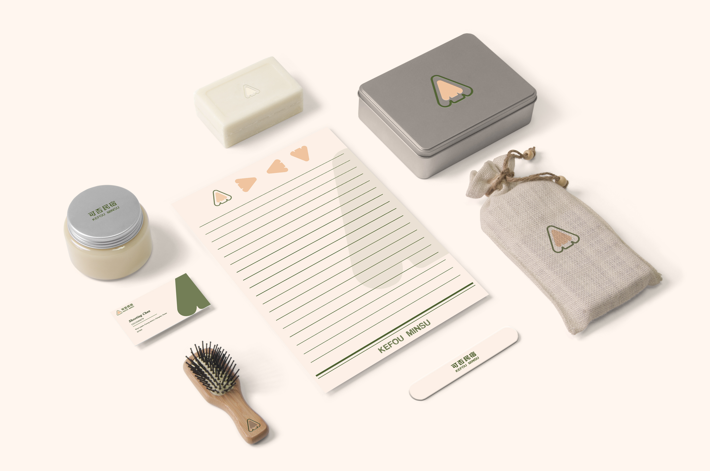
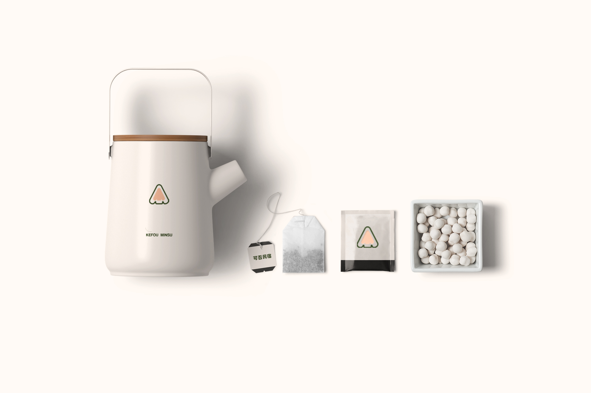

Introduction
My friend and I funded this project in the central business district of our city about the brand upgrade for Minsu (the B&B in China), trying to address the high vacancy rate of the buildings. I was in charge of the VI system design for this project.
Graphic Design
Graphic design in conjunction with street trees in the five main districts of this city.
VI Design






